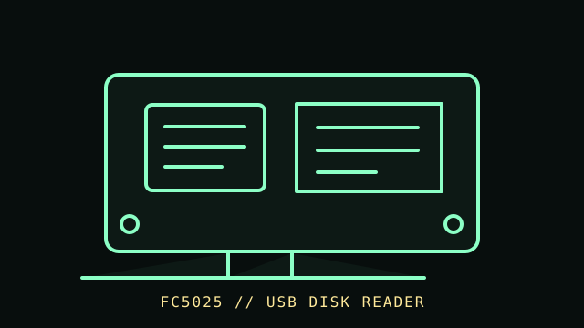

[ FLOPPY DRIVES // IDENTIFIED MODEL ]
Device Side Data FC5025 USB Floppy Controller
The Device Side Data FC5025 is a USB floppy controller for reading compatible 5.25-inch disks through a separately connected drive. It is a host-side acquisition interface, not a drive or replacement mechanism.

MODEL IDENTIFICATION: Device Side Data FC5025; record PCB/firmware version, connection cable, drive model, and acquisition software version. Confirm the full designation, revision, interface and service-document edition. This record is not a general compatibility guarantee.
Recorded specifications
| Catalog model | Device Side Data FC5025 USB Floppy Controller |
|---|---|
| Device type | USB controller / disk-reading interface |
| Interface / connector | USB to host and model-specific connection to a 5.25-inch floppy drive; confirm pinout, power, and compatible drive from the FC5025 manual. |
| Media / formats | Reads supported 5.25-inch disk formats through software-specific decoding. Media format/geometry support varies; do not treat a successful read as proof of full recovery. |
| Revision caution | Verify model suffix, label, board/firmware revision, cable and manual edition. Model-family similarity is not proof of pinout, BIOS support, interchangeability or format compatibility. |
Host and controller compatibility
- Requires a compatible 5.25-inch mechanism and the FC5025 software/drivers; the interface does not make every drive or disk format readable.
- This is not interchangeable with a motherboard floppy controller or a flux-level capture device. Consult the FC5025 manual for read/write capability, drive cabling, supported formats, and operating-system requirements.
- Preserve the original disk image and acquisition log; document any format conversion, retries, or errors as separate processing steps.
Safe preservation and cleaning
Do not insert damaged, moldy, or shedding media into the connected drive. Power off before wiring and use the FC5025 documentation for the exact drive power and connector arrangement. Store read-only originals and checksummed image copies; clean the drive only as its own service manual directs.
Photograph labels and connectors before service. Record the host, controller, settings, software, condition and source document. Keep original media or raw captures intact; verify checksums before making derivatives.
Manufacturer manuals & archival references
- Device Side Data FC5025 Drivers and Manual, version 1309 — Internet ArchiveArchived manufacturer driver/manual package for the FC5025.
- FC5025 USB Drivers and Manual — Internet ArchiveAdditional archived manual/driver package; confirm it matches the controller revision.
- Library of Congress — Digital format sustainabilityInstitutional reference for format sustainability and preservation planning.
Archived manuals may apply to a particular revision or family. The complete model/revision-specific manufacturer manual takes precedence. Capacities and recording modes are omitted where they cannot be tied to the cited model and format.